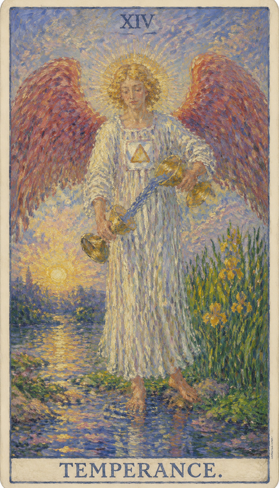

— 貳 · CORRESPONDENCES
对应要素Esoteric Correspondences
- 元素 Element
- 火火 · 行动、创造与热情的爆发
- 星座 Zodiac
- 射手座Sagittarius · 愿景、精神炼金与中庸平衡
- 生命之树 Tree of Life
- Samekh第25条路径 · 联结美丽 (Tiphareth) 与基础 (Yesod)
- 希伯来字母
- Samekh第十五个字母 ס · "支柱"，调和冲突的内在支撑


节制是一张把不同力量调成合适比例的牌。它不追求极端胜利，而重视长期平衡、耐心混合与自然流动。 当这张牌出现，说明你正遇到“调和、适度、炼金、整合”的课题。它既可能表现为外部事件，也可能是内心正在成熟的一个阶段。牌面上，一位天使正将水从一个圣杯倒向另一个，这水代表灵魂与生命：有人认为右手杯中的水象征意识、左手杯中的代表无意识，也有人认为它们分别象征物质与精神。但无论如何，我们都能看到一种交互——水在两杯之间流动，不正是调和与净化的体现吗？天使一只脚踏在水中，一只脚立于岸上；在西方文化里，水象征内心的精神世界，土地代表外界的物质世界，这种姿态正预示着我们在精神与物质之间的徘徊，以及以实际行动节制欲望、净化心灵的过程。
← 返回大厅 / 选择其它卡牌天使一脚在水中一脚在陆地，双杯之间水流不断。天使展翅，象征她已获得平衡的能力；头上金色的光环代表智慧，与远方山顶闪耀的太阳相映成辉，身边的水与花草象征诱惑。节制牌所体现的是舍得与自我克制——在充满诱惑与放任的世界里找到自我平衡，看似平淡，却是飓风中的宁静，是一种令人鼓舞的团结力量；这样的人散发着沉稳的气息，在平静与从容中悄然获得成功。
塔罗牌中的“节制”与我们的“中庸”相似，都强调适度：做人要有度，不过量也不过少，一碗水端平，不偏左也不偏右，自己与他人都要顾及，外在与内在都要平衡。但节制的平衡与正义的平衡有所不同——正义更注重逻辑与实物，节制更注重心灵的感觉。它强调内外统一，不仅是言行一致，更是心中所想与实际行动的统一，甚至灵性与世俗的一致。抽到节制，你应先问自己：我内心真正想要的是什么？然后按本心行事。节制也代表一种“结合”，但不是世俗的结合，而是灵性的结合，恰如炼金术中红国王与白皇后的结合，象征对立元素完美融合而生成哲人石。正因它与心灵密切相关，是一张偏向灵性与灵修的牌，所以在俗务上抽到它，就不要指望短期内有太大起色——这个阶段最重要的是找准方向，确定你所做的正是你真正想做的，仅此而已。
“天之道，其犹张弓欤？高者抑之，下者举之；有余者损之，不足者补之。天之道，损有余而补不足。”正位表示在人事物中对程度的把握恰到好处；逆位则表示做得过头，或做得不够——失去了那份“损有余而补不足”的分寸。
天使一脚在水中一脚在陆地，双杯之间水流不断。

天使一脚在水中一脚在陆地，双杯之间水流不断。
表现当事人面对课题时的心理位置。
提示事件发生的精神气候与现实压力。
象征这张牌运作能量的工具或门槛。
显示意识清晰度、希望或阴影。
对应此阶段在人生旅程中的功课。
红色翅膀代表激情与行动力，指向积极启动改变。
白色代表纯净与灵性，长袍代表保护与无尘的思想。
从一杯倒向另一杯的水，象征稳定的情感与自我控制。
背景中的太阳代表活力、生命力与清晰的认识。
指代平衡与转换，需要在不同事物、想法之间调和与转换。
象征受控的情感与实际行动之间的平衡。
黄色关联智慧、乐观与能量。
地上的花朵与水中的生长象征成长、美丽与自然的循环。
背景中的路径表征人生旅程与灵魂的进步。
脖子上的围巾有一个三角形，是稳定与精神觉醒的象征。
山代表障碍、挑战与坚固不移，蓝色则是清晰冷静的思考。
袍上的正方形图案代表地球与物质的稳固。
图案含单数的花，暗示需要特别留意，以达成完整或平衡。
数字 14 代表此牌所在的灵魂阶段。它指向经验累积后的转折与整合，引导人从事件表层进入更深的精神功课。
在解读时，节制提醒我们：事件表面的顺逆终会变化，真正值得把握的是牌面所揭示的内在功课。

**关键词**：平衡，节制，疗愈，合作，整合，耐心，适度，调和，内在平静，进展顺利，净化心灵，勤于节俭，相互协助，保持平衡，同等重视，适中，合理，忍耐，毅力，恒心，目标，和谐，健康，治疗，调整，洞察，和解
正位的节制表示这股能量正在逐渐清晰。它代表中庸之道、身心灵的和谐与生活的调整：你能适应新环境、做到自我控制，为他人排解争端，整理思路与情绪，在关注自我需求的同时兼顾他人意愿，并反复调研以找寻关键所在。顺着牌面主题行动，事情会显露可被把握的方向。
平衡，节制，疗愈，合作，整合，耐心，适度，调和，内在平静，进展顺利，净化心灵，勤于节俭，相互协助，保持平衡，同等重视，适中，合理，忍耐，毅力，恒心，目标，和谐，健康，治疗，调整，洞察，和解
火 元素 · 开启、滋养与自我调和
健康生活上，节制提示身心状态与当前心理课题相连。适合检查压力来源、作息习惯和身体信号，并以更稳定的方式照顾自己。节制本身就是健康之道——动静、饮食、劳逸都讲求适度调和，于体验中修身养性，让身心如双杯间的流水般顺畅而平衡。
可能代表游泳、前往有水的地方旅游，或在体验中修身养性。若问具体事件，正位多表示事情进入关键阶段。主动理解它的意义，会比单纯等待结果更有力量。

**关键词**：失衡，过度，急躁，不协调，消耗，缺乏耐心，缺乏自我调节的能力，开销过大，忘记初衷，精力消耗殆尽，毫无节制，烦闷的说教，不平衡，心态失衡，失调，过分，超额，冲动，不健康，矛盾，冲突
逆位的节制表示这股能量受阻、失衡或被错误使用：可能表现为失衡、过度、无耐心、无节制，内在的混乱与极端行为，生活的失调、无法适应新环境，失去自我控制、缺乏平和。此时最重要的是先看清自己是否正在抗拒这张牌所要求的功课。
失衡，过度，急躁，不协调，消耗，缺乏耐心，缺乏自我调节的能力，开销过大，忘记初衷，精力消耗殆尽，毫无节制，烦闷的说教，不平衡，心态失衡，失调，过分，超额，冲动，不健康，矛盾，冲突
火 元素 · 延迟、失控与过度自我沉溺
健康上，逆位常提示压力累积、情绪压抑、作息失衡或身体警讯被忽略。当生活失去节制——过度投入某一面而忽视其他，或情绪反复消耗精力，身体便会出现失调的信号。建议减少极端做法，放慢脚步重新校准各方面的比例，重新建立可持续的生活节奏。
可能代表冗长的说教、意见不和或协作失败。事情可能延迟、反复或暴露隐藏问题。先修正模式，再谈结果。

当节制出现在三牌阵中，它象征的是能量在时间维度上的显现。点击下方卡牌揭示隐秘启示。
过去可能有时期你在某个领域表现出极端行为，节制牌的出现暗示你找到了中道。
你可能正在体验稳定和谐的阶段，或在学习如何融合不同的元素以达到平衡。
未来将带来更多的自我控制与内在平衡，你会发现自己更加成熟，能更好地处理复杂情况。